growing trend of modern Visual Novels nowadays is including a bust of the characters near the message box. There are many reasons why the developer might want to do this, some examples are:
主要角色可以表达情感，因此文本的语气会更清晰。如果一个角色离得太远，或者视角发生了变化，他们将显示为胸像，而不是出现在屏幕中心。
确保阅读
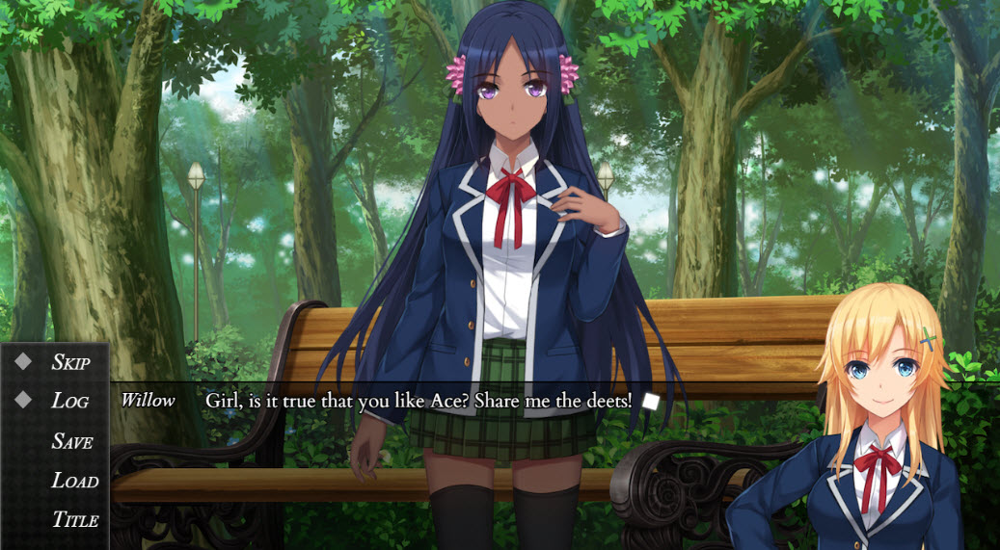
理解预定义对象位置
首先！本教程只会粗略介绍细节。转到数据库 ->
return { x: Graphics.width - object.dstRect.width * object.zoom.x,
然而，有一个问题，正如您所看到的，她位于消息框下方。我们可以避免这种情况的一种方法是在
加入场景
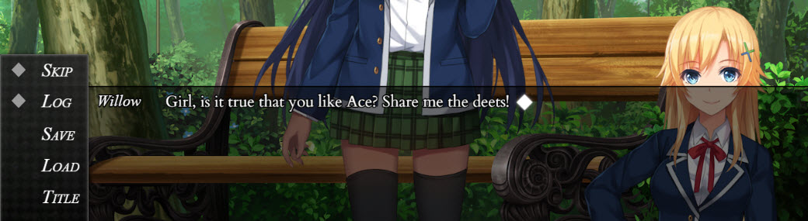
中将角色的 Z 顺序调整为 9999。但这并不高效，因为每次这个角色出现时，我们都需要调整他们的 z 顺序。我添加了另一行代码，在 return 之前。object.zIndex = 9999;return { x: Graphics.width - object.dstRect.width * object.zoom.x, y: Graphics.height - (object.dstRect.height/3 * object.zoom.y) }
这行代码的作用是更改对象的 Z-Index。由于它在 return 之前，它不会应用于 Join Character 命令的坐标字段。这节省了大量重复工作的宝贵时间。请确保保存您的进度！
准备文本宏
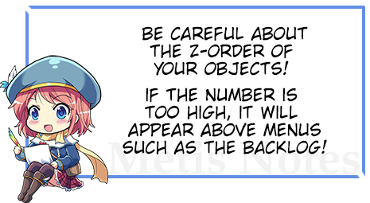
接下来，我们将创建一个文本宏来清除角色表情。这用于角色不说话的场景。
请确保阅读
文本宏
等待用户输入
调整消息窗口
现在让我们转到
场景
并设置我们的角色。由于角色的位置，当他们出现时，我们需要更改消息框的宽度。否则，它看起来会像这样：这就是创建消息区域
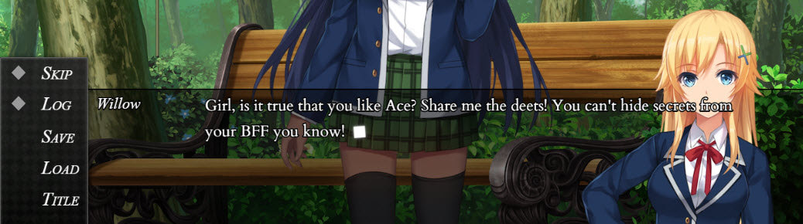
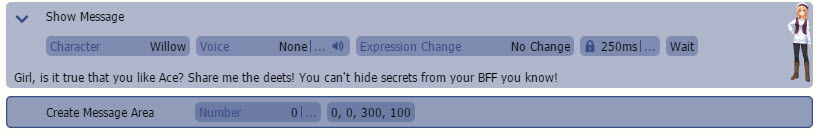
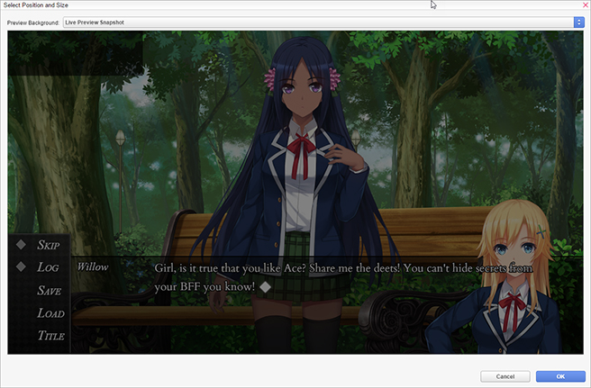
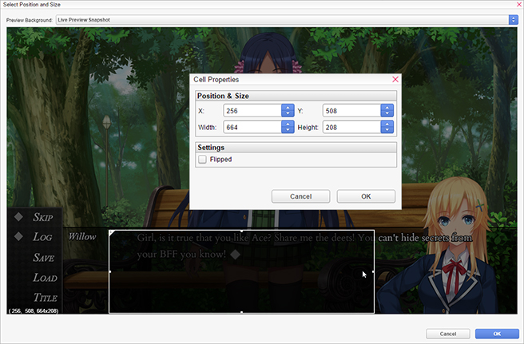
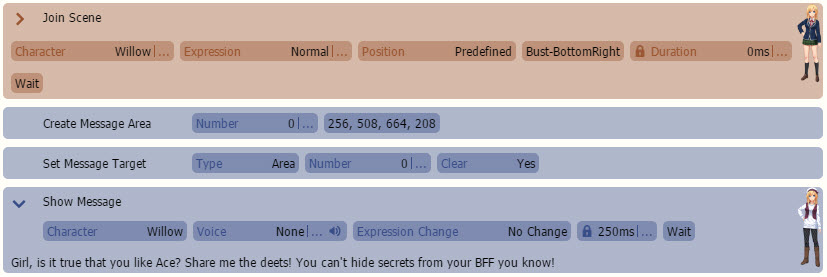
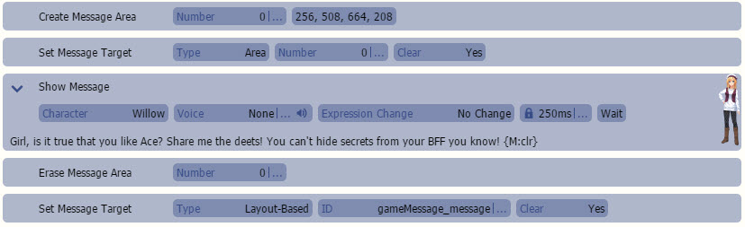
到最后，它应该看起来像这样：
正如您可能已经注意到的，每次我们想让主角说话时都这样做效率低下。这引出了...
通用事件设置如果您不确定通用事件
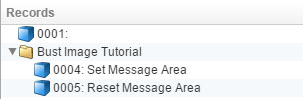
并将它们放入“重置消息区域”通用事件中。  您的通用事件
您的通用事件
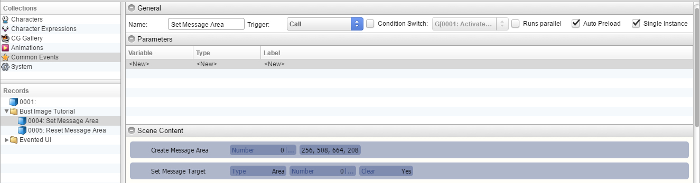
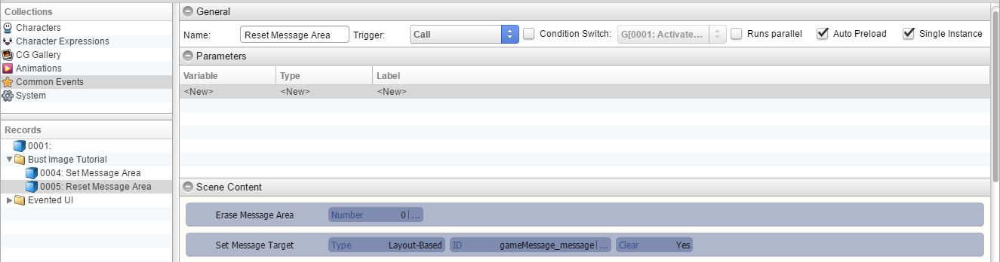
看起来可能像这样：
场景内容设置长舒一口气，我们快到了！让我们回到场景
命令并将事件设置为“重置消息区域”
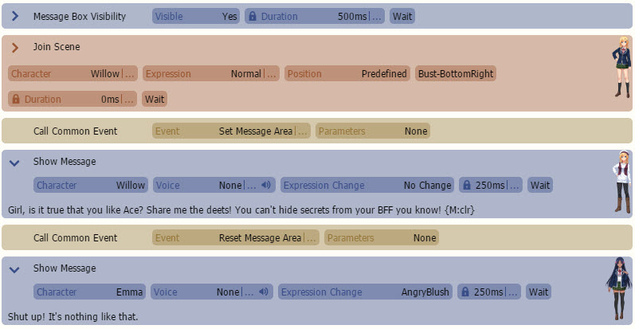
如果操作正确，我们最终的场景应该看起来像这样：
.